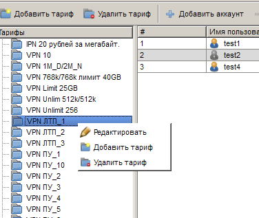
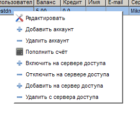
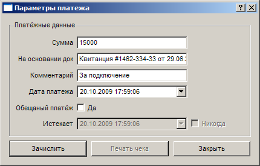
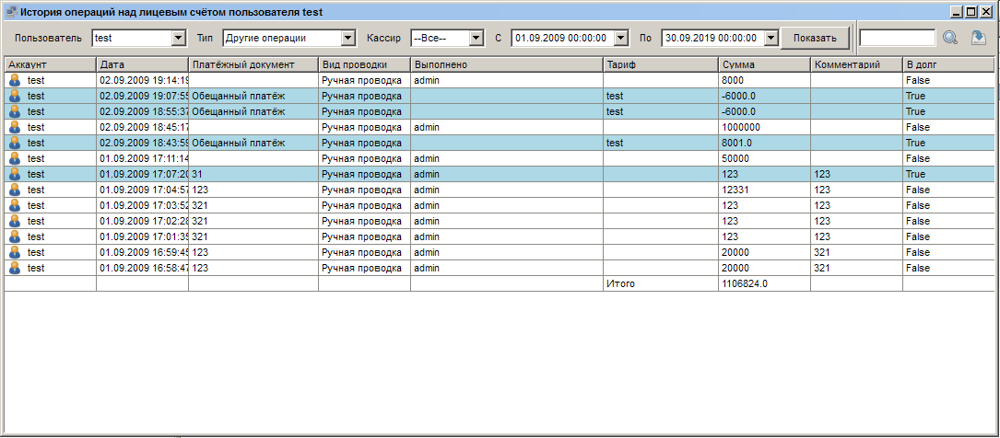
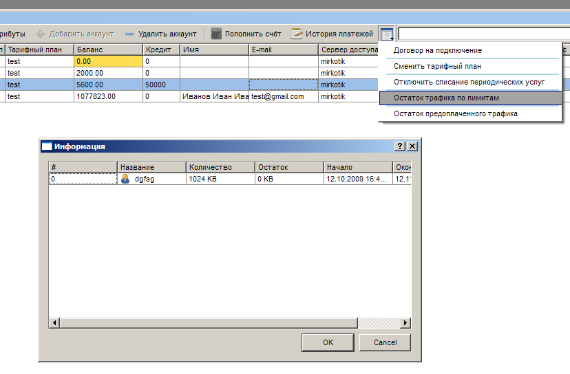

|
Интерфейс и логика |
Top Previous Next |
|
Открыть раздел «Пользователи и тарифы» можно одним из следующих способов:
– кнопкой на панели; – через меню «Главное меню» → «Пользователи и тарифы»;
Интерфейс раздела составляют панель управления с кнопками для вызова основных функций (открываются в дочерних окнах), а также две области: список «Тарифы» (в левой части экрана) и таблица «Пользователи» (в правой части экрана).
Для каждого пользователя приводится имя, состояние лицевого счета («Баланс»), лимит кредитования («Кредит»), имя, электронный адрес, сервер доступа, IP-адрес при работе через VPN или IPN, MAC-адрес для привязки к конкретной сетевой карте, дата подключения и блок пиктограмм, отражающих состояние аккаунта.
Указатель (1) сигнализирует о достаточном либо недостаточном количестве средств для активации абонента в данном расчетном периоде (в случае, если у тарифного плана указана стоимость за расчетный период), (2) – о блокировке аккаунта из-за исчерпания лимита трафика, а также факт активности (3) и наличия (4) абонента в списке контроля доступа (ACL) на сервере доступа (NAS).
Контекстные меню
В контекстном меню списка «Тарифы» есть возможность создания и удаления тарифных планов, а также редактирования уже существующих. В таблице «Пользователи» наглядно представляются учетные записи пользователей, в данный момент работающих на том или ином тарифном плане.

В контекстном меню таблицы «Пользователи» можно выбрать пункты «Редактировать», «Пополнить счет», «Добавить аккаунт», «Удалить аккаунт», аналогичные по действию соответствующим кнопкам на панели инструментов. Также в контекстном меню можно добавить и удалить пользователя, включить и отключить его на сервере доступа (NAS). При этом выполняются соответствующие команды, указанные в настройках обслуживающего абонента сервера доступа (см. ниже в описании раздела «Серверы доступа»).

Основные функции
«Добавить тариф» - Вызывает окно настроек тарифа, описанное в подразделе «Тарифы».
«Удалить тариф» - Удаляет выбранный тариф, требует подтверждения действия. При наличии пользователей на удаляемом тарифном плане и невозможности перевода их на другой тарифный план, удаление невозможно без предварительного удаления всех аккаунтов пользователей с данного тарифного плана.
Обратите внимание: при удалении тарифного плана из интерфейса администратора физически он продолжает существовать в базе данных. Это необходимо для ведения истории платежей и других операций в системе. В связи с этим создавая новый тарифный план обратите внимание, чтобы он не имел такое же имя как и уже удалённые. Для полного удаления старых тарифных планов обратитесь к разработчикам.
«Добавить аккаунт» – Вызывает окно «Профиль аккаунта», описанное ниже.
«Удалить аккаунт» – Удаляет выбранную учетную запись пользователя, требуется подтверждение.
Обратите внимание: удаление аккаунта необратимо!
«Пополнить счет» – Вызывает диалоговое окно для проведения прямых операций над счетом абонента, описанное ниже.
«История платежей» – Открывает окно с протоколом операций над лицевым счетом выбранного пользователя, описанное ниже.
Окно «Пополнить счет»
Окно для пополнения счета («Новая проводка») позволяет вручную пополнить либо списать с лицевого счета выбранного абонента определенную сумму. Для проведения операции поле «Сумма» необходимо заполнить. Сумма может быть отрицательной, в таком случае при пополнении счета фактически будет проходить списание средств (пополнить на «–5000» = списать 5000).

Для проводки также указывается платежный документ (поле «На основании док.»), комментарий (поле «Комментарий») и устанавливается дата платежа («Дата платежа»).
В Expert Billing System реализована система обещанных платежей, позволяющая удобно и гибко предоставлять абонентам средства в долг. Для того чтобы произвести такой платеж, установите флажок «Обещанный платеж».
«Обещанный платеж» — услуга, позволяющая продлить срок оказания услуг абоненту до внесения денежных средств на лицевой счет на указанный срок. Погашение ранее введенного Обещанного платежа происходит при внесении суммы денежных средств большей или равной сумме обещанного платежа. Если внесенной суммы не достаточно для достижения положительного баланса, Обещанный платеж погашается, но оказание платных услуг абоненту не возобновляется.
Окно «История платежей»
Окно предназначено для получения информации о ручных и автоматических операциях с лицевым счётом абонента.

В выпадающем списке «Пользователь» выбирается конкретный аккаунт или "Все", календарные списки «С» и «по» задают временные рамки отчета. Выпадающий список «Тип» позволяет выводить данные лишь по отдельным типам проводок (По периодическим услугам/По разовым услугам/По подключаемым услугам/По списаниям за трафик/По списаниям за время/По другим операциям). "Кассир" - системного пользователя, которым были выполнены операции. .
В контекстном меню каждой проводки есть возможность её отмены. Данная функция может быть полезна, если нужно "откатить" списания, которые были произведены не верно. Обратите внимание: Пользуйтесь удалением проводок с осторожностью!!! Никогда не удаляйте последние проводки по периодическим/разовым услугам до тех пор, пока абонент находится на том же тарифном плане. Это приведёт к тому, что списания будут сделаны снова. К примеру, если вы хотите отменить списания за тарифный план и перевести абонента на новый тарифный план, правильным будет сначала перевести абонента на новый тарифный план, подождать 5-10 минут и только после этого удалять старые проводки. Задержка в 5-10 минут связана с обновлением кэша данных(которое на самом деле происходит раз в ~2-3 минуты).
Обратите внимание: При истечении обещанного платежа его сумма в истории проводок становится равной 0, а в комментарий записывается сумма обещанного платежа.
В ExpertBilling 1.2 появилась возможность экспорта текущих данных из экранных таблиц в csv файлы. Для этого на панели инстурментов нужно воспользоваться соответствующей кнопкой(последняя на скриншоте).
Групповые операции
В ExpertBilling 1.2 появились групповые операции над абонентами:
Дополнительная информация
ExpertBilling 1.2 позволяет просматривать остатки трафиков по лимитам и остатки предоплаченного трафика.
 This help file was created with an unregistered evaluation copy of Help & Manual. © EC Software. All rights reserved. This message will not appear if you compile this help file with the registered version of Help & Manual. |